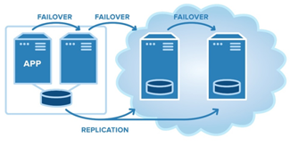
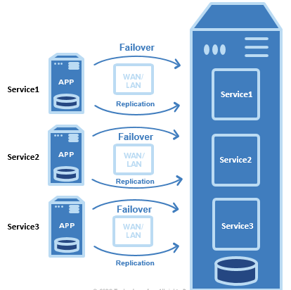
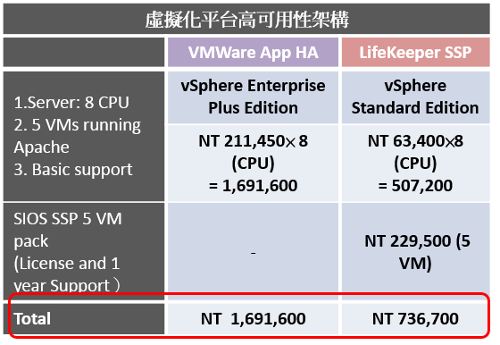
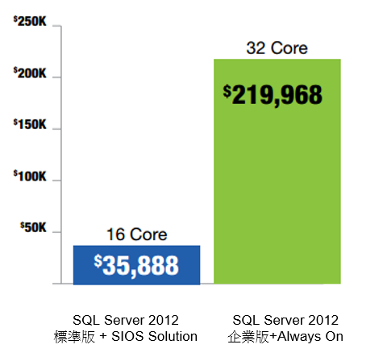
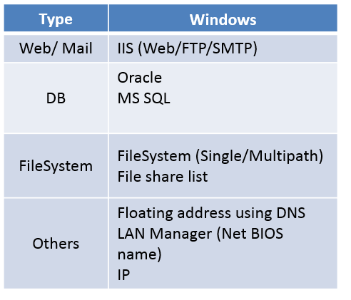
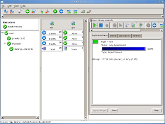
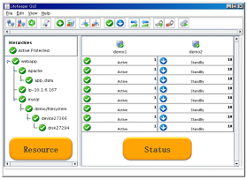

SIOS
SIOS 是X86平台(windows/Linux)高可用性應用軟體的領導廠商，主要應用於建構相關OS 及應用系統的高可用性(HA)架構，透過Block Level的方式將Porduction主機端的相關資料同步至備援主機以在發生系統故障問題時可以即時的進行系統轉換，主要應用範圍包含資料庫、Outlook、Application等相當廣泛，透過使用SIOS 高可用性H/A軟體除了可以達成系統服務高穩定性外也可以大幅度減省相關成本的開銷。
SIOS Protection Suite
在現今的資訊架構中，Windows /Linux Server及應用系統已經扮演 著重要的系統元素，當面臨到系統維護或是系統發生問題 的時候將造成企業營運上莫大的損害，為了避免這樣的情況 發生建構叢集Cluster環境並確保相關資料可以及時的進行備 援複製已達成自動化的Recovery是必要且急迫的，企業為了 達成這樣的目的往往使用並整合不同種類的技術及產品，同 時也付出了巨額的成本，如今，採用SIOS可以徹底 的解決這樣的問題發生。
提供更彈性、更簡便、低費用的系統保護機制
SIOS提供了成熟、穩定且具備成本效益的解決方案並且目前 已經在全球為無數企業完成資訊系統保護專案。 SIOS Protection Suite (SPS) 提供採用 Windows/Linux Server作為系統伺服器的用戶(包含標準版、企業版) 建構高可用性環境的解決方案，此一解決方案提供高可用性 及災難備援架構下即時監控及災難復原的功能，相較於傳統 性的方式不僅節省一半的成本也僅需1/2的人力進行建置。
SIOS Protection Suite針對所有Windows/Linux Server提供 持續不斷的監控並可自動進行災難復原工作，當受監控的 網路、Server、Application等發生異常狀況時SPS將自動 啟動災難復原機制把相關服務轉移至備援主機上執行，亦 可以設定警訊通知管理人員進行手動介入，於災難復原的 過程中，SPS透過End to End 的方式確保相關應用系統及資 料不會有任何缺漏的情況，SIOS SPS同時也提供多點 Clustering的功能，可以快速的完成高可用性及災難備援架 構的建置。
X86系統高可用性架構最佳選擇
SIOS Lifekeeper
持續監控應用系統如: Application Server、Database、Mail、File System 等服務狀況並自動執行Failover轉移。
SIOS DataKeeper
針對異地備援或SANLess架構執行Block Level 資料同步作業，達成異地備援的高可用性Active Standby 機制。
SIOS Single Server Protection
針對單機進行服務保護，當監控的服務停止時可自動啟動服務或自動重起伺服器。
 圖1 (SIOS多種HA彈性架構的方式)彈性適用於多種備援架構
SIOS Protection Suite 同時可完成Shared Storage Cluster ，或SANLess架構的H/A 機制，為了可以妥善運用硬體資源，亦可以執行多點對一，或一點對多的備援整合方式，這樣的彈性技術除了活運現行硬體資源外也讓資訊系統的保護機制更完善。
 圖2 (提供多種不同的架構模式)彌補傳統性虛擬化HA的不足
傳統性虛擬化架構通常都僅使用如Veeam 等備份方式進行系統保護，或是使用OS Level的備援方式建構。這樣的方式除了造成系統停機時間過長外，OS Level Cluster 僅只能在作業系統發生問題時進行轉移，無法監控特定應用系統。SIOS Solution可以在無需採購昂貴的App HA套件下完成細緻的系統HA工作。除了支援Vmware, 可於vCenter下簡易管理外，也可在KVM環境運行。
 圖3 (使用SIOS於虛擬化HA，價差可達95萬)節省建置成本
建構核心系統的高可用性架構往往需要龐大的取得成本, 作為全球Mission-Critical Cluster 的核心廠商，SIOS 提供了極佳的ROI解決方案。SIOS 僅需Oracle 1/5 成本即可完成資料庫高可用性架構。SIOS 僅需微軟 1/7 價格即可建構資料庫同步備援H/A 機制，並且消耗更少的系統效能
 圖4 (SIO應用於windows環境比原廠Always on還具備成本優勢)提升現有Cluster架構價值
SIOS Protection Suite 可與企業內既有Cluster 機制(如Microsoft Cluster)整合，透過具備Block Level Data Replication功能的Datakeeper 可以將資料同步到異地備援主機，在無需採購價格昂貴的Windows 企業版的情況下，完成異地備援的目標。
SIOS Data Keeper 除了可以同步SQL Server 資料外，也可以針對檔案、Email、Jpeg、SharedPoint等資料進行同步
 圖5 (SIOS 支援監控Windows 服務List)支援公有及混合雲端環境
著眼於雲端服務的趨勢，公有雲端環境勢必是企業未來佈署資訊系統的重要考量。SIOS目前已經與全球多家公有雲端供應商合作，提供主機以上相關應用系統的高可用性服務監控、轉移服務，及資料即時備援。
企業可在既有內部架構下使用SIOS Solution ，簡單架構公有雲及混合雲環境，立即提高自有實體機及虛擬機的可用性，以更細緻的服務監控，讓佈署於雲端的資訊系統獲得更高的服務可靠度。
便捷的圖形化管理機制
為了讓資訊系統管理人員可以更簡易的管理整體架構，SIOS 提供直覺式的管理介面，針對監控的相關主機、應用系統(DB、AP等)可進行單鍵式管理，並透過圖形化介面執行手動或設定自動Failover工作，於進行系統切換時，無需大量的人力到場執行相關作業即可達成。
 圖6 (SIOS便捷的圖形化管理機制)